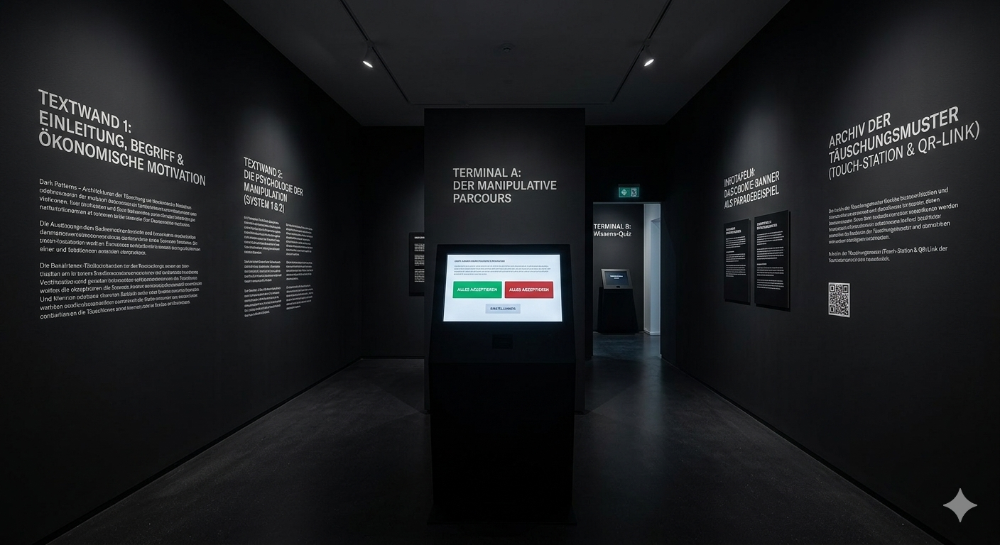

Ausstellung 3: Dark Patterns – Die Architekturen der Täuschung
Textwand 1: Einleitung des Begriffs und ökonomische Motivation
Definition und Ursprung
Der Begriff „Dark Patterns” wurde von dem britischen UX-Designer Harry Brignull geprägt, der 2010 die Website DarkPatterns.org (heute DeceptiveDesigns.com) gründete. Er beschreibt damit Benutzeroberflächen, die bewusst so gestaltet sind, dass sie Nutzende zu Handlungen verleiten, die sie eigentlich nicht beabsichtigen – wie den ungewollten Abschluss eines Abonnements oder die unfreiwillige Preisgabe persönlicher Daten.
Abgrenzung zum legitimen Design
- Persuasive Design (Legitime Nutzerführung): Zielt darauf ab, die Navigation auf einer Website komfortabel zu gestalten. Es nutzt subtile Hinweise wie Farben, Layouts und Botschaften, um die Interaktion der Nutzer positiv zu beeinflussen.
- Dark Patterns: Überschreiten eine ethische Grenze. Sie dienen nicht dem Wohl der Nutzenden, sondern manipulieren deren Entscheidungsfreiheit, um einen rein finanziellen Mehrwert für Unternehmen zu erzielen.
Die ökonomische Motivation
Hinter dem Einsatz dieser manipulativen Designs stehen klare wirtschaftliche Interessen. In einer digitalisierten Wirtschaft, in der Daten als die neue Währung gelten, führen Dark Patterns zu messbar höheren Klickraten, einer Maximierung der gesammelten Nutzerdaten und einer Steigerung der Verkaufszahlen, indem sie die Barrieren für den Ausstieg oder die Ablehnung künstlich erhöhen.
Textwand 2: Die Psychologie der Manipulation
Das Cookie-Banner als Paradebeispiel
An der Schnittstelle zur DSGVO wird die gezielte Manipulation besonders deutlich: Kleine Designänderungen beeinflussen das Klickverhalten massiv.
- Misdirection & Nudging: Farbige „Alles akzeptieren“-Buttons rücken in den Vordergrund, während die Ablehnung hinter grauen, verschachtelten Menüs versteckt wird. In einer datenschutzfreundlichen Voreinstellung erlauben weniger als 0,1 % der Nutzer aktiv das Tracking, während eine vorausgewählte Klick-Architektur (Opt-out) rund 10 % bis 30 % der Besucher dazu verleitet, unbedacht zuzustimmen.
- Faktor Zeit und Platzierung: Da Nutzer Banner als störend empfinden, klicken sie ein Interaktionselement rein impulsiv – meist innerhalb einer Mediane von nur 4 bis 8 Sekunden – an. Dialogboxen am unteren linken Bildschirmrand erzielen mit bis zu 33,1 % die höchsten Interaktionsraten, da sie den Lesefluss und den Hauptinhalt am stärksten blockieren.
Archiv der Täuschungsmuster
Scannen Sie den QR-Code oder nutzen Sie das Touchscreen-Terminal, um direkt in das globale Archiv von Harry Brignull einzutauchen. Auf der Plattform finden Sie eine lückenlose Aufbereitung realer Beispiele manipulativer Designs aus der Praxis.
Erkunden Sie alle dokumentierten Täuschungsmuster wie das Roach Motel, Confirmshaming, Sneak into Basket oder Artificial Scarcity im Detail mit echten Screenshots aus Apps und Onlineshops.
🌐 deceptive.design öffnenKognitive Überlastung und System-1-Entscheidungen
Das menschliche Entscheidungsverhalten lässt sich psychologisch mithilfe des Dual-Prozess-Modells von Daniel Kahneman erklären.
- System 1 agiert schnell, instinktiv, emotional und nahezu mühelos.
- System 2 arbeitet langsam, logisch, analytisch und unter hohem Energieaufwand.
Dark Patterns provozieren gezielt eine künstliche Komplexitätssteigerung – eine kognitive Überlastung (Overloading). Durch seitenlange, in juristischem Fachjargon verfasste Datenschutztexte, unklare Farbkontraste und Listen mit hunderten unklaren Drittanbietern kapituliert das analytische Denken (System 2), um kognitive Ressourcen zu schonen. Das Gehirn schaltet auf System 1 um: Die Entscheidung degeneriert zu einer reinen Impulshandlung, bei der das visuell dominanteste Element angeklickt wird, um die visuelle Barriere im Lesefluss so schnell wie möglich zu entfernen (Consent Fatigue).
Der Status-Quo-Bias
Menschen neigen aus Gründen der kognitiven Bequemlichkeit dazu, vorgegebene Standardeinstellungen (Defaults) unhinterfragt zu übernehmen. Das Abweichen davon erfordert einen bewussten Willensakt sowie physische Interaktion. Da das menschliche Gehirn auf Energieeffizienz ausgelegt ist, folgt es im digitalen Raum dem Prinzip des geringsten Widerstands. Betreiber nutzen dies aus, indem sie die für sie profitabelste Option als Standard festlegen.
Fear of Missing Out (FOMO)
Das psychologische Phänomen der Fear of Missing Out bezeichnet die Angst, lohnende Erfahrungen oder relevante Informationen zu verpassen. Webseitenbetreiber nutzen diese Angst gezielt durch manipulatives Wording aus. Formulierungen wie „Akzeptieren, um das volle Nutzererlebnis zu erhalten” vermitteln fälschlicherweise, dass eine datenschutzfreundliche Ablehnung zu einem Qualitätsverlust oder dem Ausschluss von Inhalten führt.
